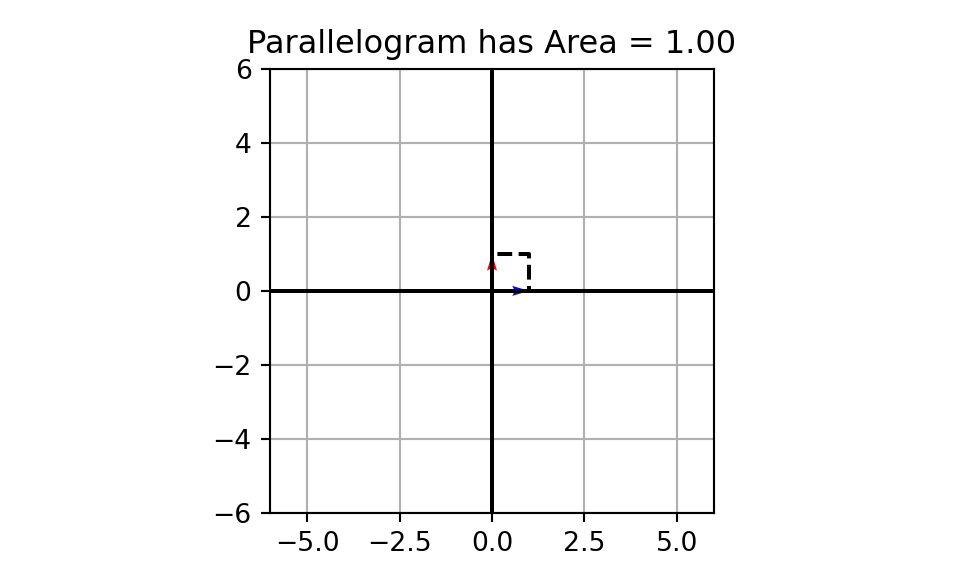
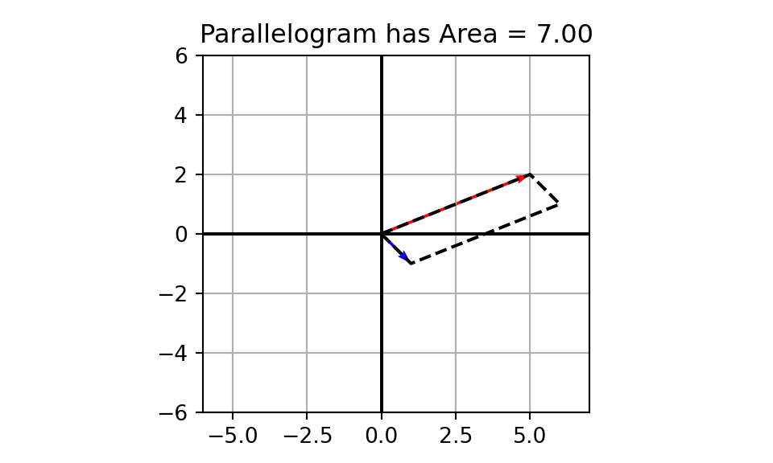

August 14, 2025
Complete the following warm-up problems to re-familiarize yourself with concepts we’ll be leveraging today.
Consider the standard basis vectors for \(\mathbb{R}^2\), \(\vec{v_1} = \begin{bmatrix} 1\\ 0\end{bmatrix}\) and \(\vec{v_2} = \begin{bmatrix} 0\\ 1\end{bmatrix}\).
Vectors are elements of a space (\(\mathbb{R}^n\), for example), with both direction and magnitude.
Vectors are added head to tail
We say that a matrix with \(m\) rows and \(n\) columns is an \(m\times n\) matrix – if a matrix has the same number of rows and columns, we call it square.
We can view square matrices as functions that transform vectors (or shapes) in their space (\(\mathbb{R}^n\)).
Goals for Today: After today’s discussion, you should be able to
A parallelogram created using the vectors \(\vec{v_1} = \begin{bmatrix} 1\\ 0\end{bmatrix}\) and \(\vec{v_2} = \begin{bmatrix} 0\\ 1\end{bmatrix}\)

A parallelogram created using the vectors \(\vec{v_1} = \begin{bmatrix} 1\\ 0\end{bmatrix}\) and \(\vec{v_2} = \begin{bmatrix} 0\\ 1\end{bmatrix}\)
A parallelogram created using the vectors \(\vec{u_1} = \begin{bmatrix} 5\\ 2\end{bmatrix}\) and \(\vec{u_2} = \begin{bmatrix} 1\\ -1\end{bmatrix}\)

Check out this interactive parallelogram explorer and experiment with different initial vectors in both the \(\mathbb{R}^2\) and \(\mathbb{R}^3\) settings.
Explore a variety of vectors including linearly independent and linearly dependent sets.
Think about what you observed as you explored different combinations of initial vectors in both the \(\mathbb{R}^2\) and \(\mathbb{R}^3\) settings.
Summary: The area of a parallelogram formed by two two-dimensional vectors, the volume of a parallelepiped formed by three three-dimensional vectors, and their higher dimensional analogs can be used to identify whether or not…
If the column vectors are not linearly independent, then the dimension of the shape formed by those column vectors collapses and the corresponding measure (area, volume, etc.) will be \(0\).
In this case, the matrix is not invertible.
We’ve identified that the area, volume, etc. will give us information about the invertibility of a matrix.
Claim (without proof): Determinants will calculate these quantities for us.
We saw the definition of a determinant of a \(2\times 2\) matrix during our discussion on invertibility.
Recall (Inverse of a \(2\times 2\) Matrix): Let \(A = \left[\begin{array}{rr} a & b\\ c & d\end{array}\right]\), then as long as \(\det\left(A\right) = ad - bc\) is non-zero, we have that \(A\) is invertible and \(\displaystyle{A^{-1} = \frac{1}{ad - bc}\left[\begin{array}{rr} d & -b\\ -c & a\end{array}\right]}\).
We’ll add to this by showing how to compute the determinant of a square matrix which is larger than \(2\times 2\), but for now, the definition of the determinant of a \(2\times 2\) matrix is reiterated below.
Definition (Determinant of a \(2\times 2\) Matrix): Consider the matrix \(A = \left[\begin{array}{rr} a & b\\ c & d\end{array}\right]\). We have \(\det\left(A\right) = ad - bc\).
Definition (Determinant of a \(2\times 2\) Matrix): Consider the matrix \(A = \left[\begin{array}{rr} a & b\\ c & d\end{array}\right]\). We have \(\det\left(A\right) = ad - bc\).
Example: Find the determinant of the matrix \(A = \left[\begin{array}{rr} 2 & -6\\ 1 & 5\end{array}\right]\).
\[\begin{align*} \det\left(\left[\begin{array}{rr} 2 & -6\\ 1 & 5\end{array}\right]\right) \end{align*}\]
Definition (Determinant of a \(2\times 2\) Matrix): Consider the matrix \(A = \left[\begin{array}{rr} a & b\\ c & d\end{array}\right]\). We have \(\det\left(A\right) = ad - bc\).
Example: Find the determinant of the matrix \(A = \left[\begin{array}{rr} 2 & -6\\ 1 & 5\end{array}\right]\).
\[\begin{align*} \det\left(\left[\begin{array}{rr} 2 & -6\\ 1 & 5\end{array}\right]\right) &= 2\left(5\right) - \left(-6\right)\left(1\right) \end{align*}\]
Definition (Determinant of a \(2\times 2\) Matrix): Consider the matrix \(A = \left[\begin{array}{rr} a & b\\ c & d\end{array}\right]\). We have \(\det\left(A\right) = ad - bc\).
Example: Find the determinant of the matrix \(A = \left[\begin{array}{rr} 2 & -6\\ 1 & 5\end{array}\right]\).
\[\begin{align*} \det\left(\left[\begin{array}{rr} 2 & -6\\ 1 & 5\end{array}\right]\right) &= 2\left(5\right) - \left(-6\right)\left(1\right)\\ &= 10 + 6 \end{align*}\]
Definition (Determinant of a \(2\times 2\) Matrix): Consider the matrix \(A = \left[\begin{array}{rr} a & b\\ c & d\end{array}\right]\). We have \(\det\left(A\right) = ad - bc\).
Example: Find the determinant of the matrix \(A = \left[\begin{array}{rr} 2 & -6\\ 1 & 5\end{array}\right]\).
\[\begin{align*} \det\left(\left[\begin{array}{rr} 2 & -6\\ 1 & 5\end{array}\right]\right) &= 2\left(5\right) - \left(-6\right)\left(1\right)\\ &= 10 + 6\\ &= 16 \end{align*}\]
Interpretations: The area of the parallelogram created by the vectors \(\vec{v_1} = \begin{bmatrix} 2\\ 1\end{bmatrix}\) and \(\vec{v_2} = \begin{bmatrix} -6\\ 5\end{bmatrix}\) is \(16\), and the matrix \(A\) is invertible.
Definition (Determinant of a \(2\times 2\) Matrix): Consider the matrix \(A = \left[\begin{array}{rr} a & b\\ c & d\end{array}\right]\). We have \(\det\left(A\right) = ad - bc\).
Example: Calculate the determinant of each of the following \(2\times 2\) matrices.
Definition (\(ij\)-Cofactor of \(A\)): Let \(A\) be an \(n\times n\) matrix. We define the \(ij\)-cofactor of \(A\), denoted by \(A_{ij}\) to be the \(\left(n-1\right) \times \left(n-1\right)\) matrix obtained from \(A\) by deleting row i and column j.
Definition (Determinant of an \(n\times n\) Matrix): Let \(A\) be an \(n\times n\) matrix. We can compute \(\det\left(A\right)\) using cofactor expansion along any row, \(i\). That is,
\[\begin{align*}\det\left(A\right) &= \sum_{j = 1}^{n}{\left(-1\right)^{i+j}a_{ij}\det\left(A_{ij}\right)}\\ &= \left(-1\right)^{i + 1}a_{i1}\det\left(A_{i1}\right) + \left(-1\right)^{i + 2}a_{i2}\det\left(A_{i2}\right) + \cdots + \left(-1\right)^{i + n}a_{in}\det\left(A_{in}\right) \end{align*}\]
Example Compute the determinant of the matrix \(A = \left[\begin{array}{rrr} 1 & -2 & 5\\ 0 & 4 & 1\\ 1 & 2 & -1\end{array}\right]\).
\[\begin{align*} \det\left(\left[\begin{array}{rrr} 1 & -2 & 5\\ 0 & 4 & 1\\ 1 & 2 & -1\end{array}\right]\right) \end{align*}\]
Example Compute the determinant of the matrix \(A = \left[\begin{array}{rrr} 1 & -2 & 5\\ 0 & 4 & 1\\ 1 & 2 & -1\end{array}\right]\).
\[\begin{align*} \det\left(\left[\begin{array}{rrr} 1 & -2 & 5\\ 0 & 4 & 1\\ 1 & 2 & -1\end{array}\right]\right) &= 1\det\left(\left[\begin{array}{rr} 4 & 1\\ 2 & -1\end{array}\right]\right) - \left(-2\right)\det\left(\left[\begin{array}{rr} 0 & 1\\ 1 & -1\end{array}\right]\right) + 5\det\left(\left[\begin{array}{rr} 0 & 4\\ 1 & 2\end{array}\right]\right) \end{align*}\]
Example Compute the determinant of the matrix \(A = \left[\begin{array}{rrr} 1 & -2 & 5\\ 0 & 4 & 1\\ 1 & 2 & -1\end{array}\right]\).
\[\begin{align*} \det\left(\left[\begin{array}{rrr} 1 & -2 & 5\\ 0 & 4 & 1\\ 1 & 2 & -1\end{array}\right]\right) &= 1\det\left(\left[\begin{array}{rr} 4 & 1\\ 2 & -1\end{array}\right]\right) - \left(-2\right)\det\left(\left[\begin{array}{rr} 0 & 1\\ 1 & -1\end{array}\right]\right) + 5\det\left(\left[\begin{array}{rr} 0 & 4\\ 1 & 2\end{array}\right]\right)\\ &= \left(4\left(-1\right) - 1\left(2\right)\right) + 2\left(0\left(-1\right) - 1\left(1\right)\right) + 5\left(0\left(2\right) - 4\left(1\right)\right)\\ \end{align*}\]
Example Compute the determinant of the matrix \(A = \left[\begin{array}{rrr} 1 & -2 & 5\\ 0 & 4 & 1\\ 1 & 2 & -1\end{array}\right]\).
\[\begin{align*} \det\left(\left[\begin{array}{rrr} 1 & -2 & 5\\ 0 & 4 & 1\\ 1 & 2 & -1\end{array}\right]\right) &= 1\det\left(\left[\begin{array}{rr} 4 & 1\\ 2 & -1\end{array}\right]\right) - \left(-2\right)\det\left(\left[\begin{array}{rr} 0 & 1\\ 1 & -1\end{array}\right]\right) + 5\det\left(\left[\begin{array}{rr} 0 & 4\\ 1 & 2\end{array}\right]\right)\\ &= \left(4\left(-1\right) - 1\left(2\right)\right) + 2\left(0\left(-1\right) - 1\left(1\right)\right) + 5\left(0\left(2\right) - 4\left(1\right)\right)\\ &= -6 - 2 - 20\\ \end{align*}\]
Example Compute the determinant of the matrix \(A = \left[\begin{array}{rrr} 1 & -2 & 5\\ 0 & 4 & 1\\ 1 & 2 & -1\end{array}\right]\).
\[\begin{align*} \det\left(\left[\begin{array}{rrr} 1 & -2 & 5\\ 0 & 4 & 1\\ 1 & 2 & -1\end{array}\right]\right) &= 1\det\left(\left[\begin{array}{rr} 4 & 1\\ 2 & -1\end{array}\right]\right) - \left(-2\right)\det\left(\left[\begin{array}{rr} 0 & 1\\ 1 & -1\end{array}\right]\right) + 5\det\left(\left[\begin{array}{rr} 0 & 4\\ 1 & 2\end{array}\right]\right)\\ &= \left(4\left(-1\right) - 1\left(2\right)\right) + 2\left(0\left(-1\right) - 1\left(1\right)\right) + 5\left(0\left(2\right) - 4\left(1\right)\right)\\ &= -6 - 2 - 20\\ &= -28 \end{align*}\]
Note. We could have saved a bit of work by expanding along the first column or the second row, taking advantage of the \(0\) element in the matrix. We would end up with the same determinant – we just need to take care in determining the signs on the terms in the cofactor expansion.
Example Compute the determinant of the matrix \(A = \left[\begin{array}{rrr} 1 & -2 & 5\\ 0 & 4 & 1\\ 1 & 2 & -1\end{array}\right]\) by using cofactor expansion along the second row instead of the first
Example Compute the determinant of the matrix \(A = \left[\begin{array}{rrr} 0 & 1 & 7\\ -2 & 1 & 8\\ 0 & -9 & -2\end{array}\right]\).
Note (Feasibility of Computing Determinants): At the beginning of our semester, we discussed that linear systems modeling real-world systems could easily utilize hundreds or thousands of variables and have hundreds or thousands of constraint equations.
Even considering a \(25\times 25\) matrix, a computer performing a trillion multiplications per second would take half a million years to compute its determinant using cofactor expansion!
Algorithmic Complexity of Cofactor Expansion: The complexity of cofactor expansion to compute a determinant is on the order of \(n!\). Computer scientists would say that the algorithm is \(O\left(n!\right)\) – which is very bad!
Fortunately there are faster methods, some of which exploit the structure of a matrix. One of those methods appears below.
Definition (Triangular Matrix): A matrix \(A\) having all entries either above or below its main diagonal as \(0\)’s is called a triangular matrix. If the \(0\)’s are below the main diagonal, \(A\) is called lower triangular while a matrix having all \(0\)’s above the main diagonal is upper triangular.
\[A = \begin{bmatrix} 2 & 8 & -3\\ 0 & 7 & 9\\ 0 & 0 & -1\end{bmatrix}~~~~~~B = \begin{bmatrix} 6 & 0 & 0 & 0\\ -2 & 0 & 0 & 0\\ -1 & 3 & 1 & 0\\ 2 & 0 & -7 & 5\end{bmatrix}\]
Strategy (Determinants of Triangular Matrices): If \(A\) is a triangular matrix, then \(\det\left(A\right)\) is the product of the entries along the main diagonal of \(A\).
Great News! We can convert any square matrix into a triangular matrix using row-reduction, which only has complexity \(O\left(n^3\right)\) – an enormous improvement.
Example: Find the determinant of the matrix \(A = \left[\begin{array}{rrrr} 2 & 1 & -4 & 8\\ 0 & -1 & 8 & 3\\ 0 & 0 & -3 & 0\\ 0 & 0 & 0 & 4\end{array}\right]\).
Since the matrix is an upper-triangular matrix, its determinant is the product of its diagonal elements.
That is, \(\det\left(A\right) = 2\left(-1\right)\left(-3\right)\left(4\right) = 24\).
Interpretations: The volume of the parallelepiped bounded by the column vectors of \(A\) is \(24\). Additionally, the matrix \(A\) is invertible!
Example: Calculate the determinants of each of the following triangular matrices. Interpret the determinants in terms of areas or volumes and discuss what the determinant reveals about invertibility.
\[A = \begin{bmatrix} 2 & 8 & -3\\ 0 & 7 & 9\\ 0 & 0 & -1\end{bmatrix}~~~~~~B = \begin{bmatrix} 6 & 0 & 0 & 0\\ -2 & 0 & 0 & 0\\ -1 & 3 & 1 & 0\\ 2 & 0 & -7 & 5\end{bmatrix}\]
Before we move forward, it is useful to mention some common notation.
When stating that we are computing the determinant of a matrix, it is common to replace the brackets on either end of the matrix by vertical bars.
For example, instead of writing \(\det\left(\left[\begin{array}{rrr} a & b & c\\ d & e & f\\ g & h & i\end{array}\right]\right)\), it is common to write \(\left|\begin{array}{rrr} a & b & c\\ d & e & f\\ g & h & i\end{array}\right|\) instead.
\[A = \left[\begin{array}{rr} 2 & 6\\ -3 & 5\end{array}\right] ~~~~~~~ B = \left[\begin{array}{rr} -1 & 3\\ 8 & 2\end{array}\right]\]
\[A = \left[\begin{array}{rrr} 1 & 2 & -1\\ -3 & 0 & 5\\ 4 & 2 & -1\end{array}\right] ~~~~~ B = \left[\begin{array}{rrr} 2 & -5 & 4\\ 0 & 1 & 0\\ 1 & 1 & 1\end{array}\right] ~~~~~ C = \left[\begin{array}{rrr} 3 & -1 & -1\\ 1 & 2 & 4\\ -3 & -1 & -2\end{array}\right]\]
\[A = \left[\begin{array}{rr} 2 & 9\\ 0 & 3\end{array}\right] ~~~~~ B = \left[\begin{array}{rrr} -1 & 0 & 0 \\ 2 & 3 & 0\\ 3 & -3 & -5\end{array}\right] ~~~~~ C = \left[\begin{array}{rrrrr} 2 & 0 & 1 & 8 & 1\\ 0 & 1 & 0 & 0 & 0\\ 0 & 0 & 4 & 8 & -2\\ 0 & 0 & 0 & 3 & -1\\ 0 & 0 & 0 & 0 & 2\end{array}\right]\]
\[A = \left[\begin{array}{rrrr} 1 & 2 & -5 & 1\\ -3 & 1 & 8 & 1\\ 0 & 2 & 0 & 0\\ 0 & -1 & 0 & 1\end{array}\right] ~~~~~~ B = \left[\begin{array}{rrrrr} 2 & -1 & 3 & 6 & 2\\ 0 & 0 & 5 & 0 & 0\\ 0 & -3 & 1 & 4 & -2\\ 0 & 0 & 2 & 1 & 7\\ 0 & 0 & 3 & 0 & 2\end{array}\right]\]
Determine the impact of a row-swap operation on a \(2\times 2\) matrix by finding \(\det\left(\left[\begin{array}{rr} a & b\\ c & d\end{array}\right]\right)\) and \(\det\left(\left[\begin{array}{rr} c & d\\ a & b\end{array}\right]\right)\).
Determine the impact of scaling a row of a \(2\times 2\) matrix by a constant \(k\) by comparing \(\det\left(\left[\begin{array}{rr} a & b\\ kc & kd\end{array}\right]\right)\) to \(\det\left(\left[\begin{array}{rr} a & b\\ c & d\end{array}\right]\right)\).
Determine the impact on the determinant of a \(2\times 2\) matrix if we add a scalar multiple of the second row to the first row by comparing \(\det\left(\left[\begin{array}{rr} a + kc & b + kd\\ b & c\end{array}\right]\right)\) to \(\det\left(\left[\begin{array}{rr} a & b\\ b & c\end{array}\right]\right)\).
\[\Huge{\text{Complete Homework 9}}\] \[\Huge{\text{on MyOpenMath}}\]
\(\Huge{\text{Subspaces}}\)
Comments on Cofactor Expansion
Definition (Determinant of an \(n\times n\) Matrix): Let \(A\) be an \(n\times n\) matrix. We can compute \(\det\left(A\right)\) using cofactor expansion along any row, \(i\). That is,
\[\begin{align*}\det\left(A\right) &= \sum_{j = 1}^{n}{\left(-1\right)^{i+j}a_{ij}\det\left(A_{ij}\right)}\\ &= \left(-1\right)^{i + 1}a_{i1}\det\left(A_{i1}\right) + \left(-1\right)^{i + 2}a_{i2}\det\left(A_{i2}\right) + \cdots + \left(-1\right)^{i + n}a_{in}\det\left(A_{in}\right) \end{align*}\]
Computing the determinant of a large matrix requires good organization and book-keeping.
In order to get comfortable with the process of computing determinants, we’ll compute determinants of \(2\times 2\), \(3\times 3\), and some \(4\times 4\) matrices by hand.
We’ll also compute the determinants of larger matrices by hand if they have convenient structure.